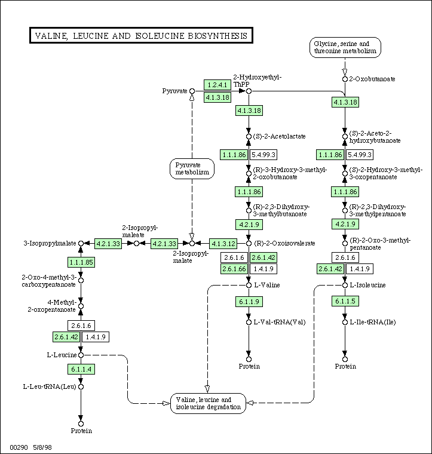

Lecture 2 Feb 2001 Per Kraulis
The availability of the complete genomes allow many new types of experiments and analysis. The new approaches and questions that the genomes make possible are usually referred to as functional genomics. The task is to define the function of a gene (or its protein) in the life processes of the organism, where function refers to the role it plays in a larger context.
But what are these life processes? The most obvious example is the metabolism of an organism, the basic chemical system that generates essential components such as amino acids, sugars and lipids, and the energy required to synthesize them and to use them in creating proteins and cellular structures. This system of connected chemical reactions is a metabolic network.
Below is an example of such a network. This is the subsystem for synthesis of the amino-acids valine, leucine and isoleucine. This image was taken from the KEGG database. In the original web page, this image is clickable, so that one may navigate to other, connected metabolic subsystems. The green boxes indicate enzymes which have been identified in the organism, in this case Escherichia coli.
Signalling networks are another kind of network (or pathway) that are of central importance in biology. If the regulation of genes are involved, one often talks about genetic networks. Although the processes are different, and the types of proteins and other molecules are different, the overall picture is fairly similar: There are many components which interact in a connected network.
Typically, metabolic and signalling networks are viewed as different entities. In metabolic networks the flow of mass and energy is the essential purpose of the machinery. In signalling networks the purpose is the regulation of other processes, and the use of energy and mass flow is a requirement, but not really the point. However, there is an essential component of regulation also in metabolic networks: The enzymes are regulated through interactions with substrates and products so that the appropriate conditions in the cell are upheld.
An important emerging field in bioinformatics is to understand metabolic and signalling networks in term of their function in the organism and in relation to the data we already have. This requires combining information from a large number of sources: classical biochemistry, genomics, functional genomics (e.g. microarray experiments), network analysis, life process descriptions, and simulation. A theory of the cell must combine the descriptions of the structures in it (genome, proteome, subcellular structures, etc) with a theoretical and computational description of the dynamics of the life processes.
One of the most important future challenges for bioinformatics is how to make all this information comprehensible in biological terms. This is necessary in order facilitate the use of the information for predictive purposes. We want to do more than just describe what is going on in an organism: We also wish to be able to say what will happend given some specific set of circumstances. This kind of predictive power will only be reached if the complexity of biological processes can be handled computationally.